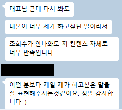
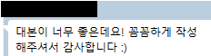
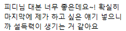

📌 이번 달 무료 컨설팅 자리 확인
병원 유튜브가 실패하는
✕ 일단 찍고 보는 운영소재도 순서도 없이 올리다 지쳐서 멈춥니다
✕ 조회수만 좇는 콘텐츠조회수는 나와도 신환 문의로 이어지지 않습니다
✕ 개수 채우기식 대행월 N편 업로드만 하고, 왜 안 되는지는 아무도 설명 안 해줍니다
유튜브를 하고 계신 원장님,하나라도 해당된다면
지금이 진단이 필요한 상태입니다
✓ 영상을 올려도 조회수가 몇 백에서 멈춥니다
✓ 조회수는 나오는데 신환 문의로 이어지지 않습니다
✓ 뭘 찍어야 할지, 소재부터 막막합니다
✓ 대행을 맡겼는데 뭐가 좋아졌는지 설명을 못 들었습니다
그 '왜' 를몽PD 가 같이 찾아드립니다
왜 방향성 부터
1 방향이 틀리면, 노력이 쌓이지 않습니다유튜브 알고리즘은 채널의 '방향'을 학습합니다. 방향 없이 100개를 올리면, 알고리즘도 시청자도 이 채널이 뭐 하는 곳인지 모릅니다. 그동안 쓴 시간과 촬영 비용은 돌아오지 않습니다.
2 내 채널은, 내가 객관적으로 못 봅니다운영자 눈에는 내 영상의 문제가 안 보입니다. 잘되는 채널과 무엇이 다른지 비교할 기준도, 알고리즘이 내 채널을 어떻게 읽는지 볼 데이터 감각도 밖에서 봐야 생깁니다.
3 원장님껜, 그걸 파고들 시간이 없습니다방향 하나 잡는 데도 채널 조사·벤치마킹 계정 분석에 상당한 시간이 듭니다. 진료를 보면서 그 시간을 내는 건 현실적으로 어렵습니다.
"운영을 하면 할수록,방향성을 잡는 게 가장 어렵더라구요."
실제 진단 후기 중에서
그래서 몽PD 는 한 채널의 방향을 잡는 데무료 컨설팅을 매월 10 명만 받는 이유 이고,신청서를 보고 선별하는 이유 입니다.
먼저, 솔직하게 말씀드립니다
구독자·조회수·검색노출,보장 해드릴 수 없습니다
오히려 원장님이 생각하시는 것보다안 나올 가능성이 훨씬 높습니다.
⌄
그런데, 괜찮습니다.
원장님은 유튜버 가
인플루언서가 되려는 것도,병원 매출을 돕는 수단 ,
이건 몽PD 의 주장이 아니라,
"조회수가 안 나와도

실제 대화 캡처 (닉네임·프로필 비공개)
구독자가 적어도,
채널 안에 3박자 퍼널 만
① 풀링 컨텐츠잠재 환자가 증상을 검색하다 찾아 들어오는 유입용 영상
↓
② 키 컨텐츠원장님의 전문성으로 "여기서 진료받고 싶다"는 확신을 만드는 영상
↓
③ 랜딩페이지그 확신이 상담·예약 문의로 전환되는 마지막 관문
매출은 조회수 가 만드는 게 아니라,퍼널 이 만듭니다.
그리고 이 퍼널에서병원은 압도적으로 유리 합니다
일반 크리에이터는 신뢰를 처음부터 쌓아야 하지만,전문성을 보여주기만 하면 됩니다.키 컨텐츠의 재료 니까요.
이 세 개가 채널 안에서 연결되어 있으면,본 사람이 문의로 이어집니다. 몽PD 의 진단은 이 퍼널을 어떻게 만들지부터 봅니다.
이번 달 자리를 놓치면 다음 달까지 기다리셔야 합니다그 한 달에도, 광고비는 계속 나갑니다
여기까지 읽으셨으면,
저한테 맡기지 않아도이 5가지 는 오늘 됩니다
1 소재는 진료실에서 뽑으세요이번 주 진료실에서 반복해서 답한 질문 10개를 그대로 적어보세요. 이미 검증된 소재입니다. 책상에서 짜낸 기획보다 낫습니다.
2 제목은 환자분들이 검색하는 문장 그대로네이버·유튜브 검색창에 그 질문의 핵심 단어를 쳐보고, 자동완성에 뜨는 표현을 제목에 그대로 쓰세요. 전문 용어로 다듬는 순간 검색에서 사라집니다.
3 영상 하나에 궁금증 하나만한 영상에서 세 가지를 다루면 아무것도 안 남습니다. 질문 하나를 끝까지 답하고 끊으세요. 짧아도 괜찮습니다.
4 다음에 볼 영상을 정해주세요영상 끝과 고정댓글에 "이 얘기를 자세히 다룬 영상"을 링크로 걸어두세요. 알아서 찾아보게 두면 대부분 그냥 나갑니다.
5 신청 통로를 첫 줄에 두세요채널 설명과 영상 설명 첫 줄 에 예약·상담 신청 링크를 넣으세요. "문의는 프로필 참고"는 다 데워놓은 환자를 문 앞에서 돌려보내는 겁니다.
여기까지는 비용도, 대행도 필요 없습니다.
⌄
그런데 솔직히,이것만으로는 부족합니다
이 5가지를 다 하시라는 말이 아닙니다. 한두 개 고,
소재가 문제인 채널은같은 5가지라도, 순서가 다릅니다.
일반론은 무엇을 할지 알려주고,뭐부터 할지 알려줍니다.
30분 진단 에서영상 잘 만드는 법 강의가 아닙니다.막힌 지점 을 찾아내는 시간입니다.
① 채널 상태 점검지금 계정이 알고리즘에 어떻게 읽히고 있는지
↓
② 제목·썸네일 진단클릭이 새는 지점이 어디인지
↓
③ 퍼널 진단풀링 → 키 컨텐츠 → 랜딩페이지 연결이 어디서 끊겼는지
그냥 올리는 영상 은 조회수에서 끝나고,설계된 영상 은 신환 문의가 됩니다.
몽PD 의 진단·컨설팅을 받은 채널
결과로 보여드립니다
연애 콘텐츠 채널 (컨설팅 실측)
컨설팅 후 영상,2.5만회
이전 영상 273회 → 컨설팅 후 2.5만회고가 상품 판매 까지
SNS 운영자 (블로그·인스타·유튜브)
막막했던 방향성,벤치마킹 계정 과 함께
계정 상태 · 알고리즘 · 제목 · 썸네일 전면 점검
분야는 달라도, 전환이 설계된 영상 의 원리는 같습니다.의료광고 심의 까지 감안해 적용합니다.
몽PD 는물리치료사로
부업으로 유튜브를 시작했다가,'전환'이 들어오는 구조 가
그 구조를 제 채널에서 먼저 검증하고,
저는 유튜버 를 만들어드리는 사람이 아닙니다.매출로 이어지는 구조를 설계 하는 사람입니다.
솔직히 말씀드리면,대행 경력이 긴 사람은 아닙니다. 원장님이 하시면 됩니다.
흔한 대행과
흔한 광고·대행 영업
✕ 진단 없이 일단 계약부터 권합니다✕ 월 몇 편 업로드, 개수로 보고합니다✕ 성과가 없어도 "좀만 기다리라"고만 합니다
몽PD
✓ 계약 전에 무료진단부터 왜 안 되는지 먼저 보여드립니다✓ 업로드 개수가 아니라 전환 설계 를 봅니다✓ 미디어콘텐츠 제작 전문 PD가 진료과와 지역 상권까지 직접 조사하고 진단합니다
병원 유튜브, 어디서부터 손대야 할지 모르겠다면
원장님은진료 만 보세요.
채널이 왜 안 되는지 찾는 일은몽PD 가 합니다.
먼저 진단받은 분들의솔직한 이야기
“ 벤치마킹할 수 있는 계정들과 앞으로의 방향성, 어느 정도 길을 잡아주셔서 너무 좋았습니다!
“ 무료 컨설팅인데도 제 채널 분야를 열심히 조사해주신 부분이 너무나 인상 깊었어요.
“ 지금까지 잘못된 부분을 한번 짚고 넘어갈 수 있던 기회라 좋았습니다.
"유튜브 시작 한 달 만에 고가 상품 세일즈 성공, 첫 영상 조회수 2만 뷰 나왔어요!!"
저는 사실 몽PD님의 컨설팅 받기 전까지 유튜브는 시작조차 못했어요. 컨설팅 전 영상은 조회수 200대였는데, 컨설팅 후 영상은 2.5만 회를 넘겼습니다.
"운영할수록 어려웠던 방향성, 한번 길을 잡아주셨어요."
이번 컨설팅을 통해서 현재 채널의 상태, 알고리즘, 제목, 썸네일 등등 점검 받을 수 있어서 좋은 기회가 된 것 같아요. 앞으로 제작할 콘텐츠부터는 컨설팅 받은 방향으로 기획해서 영상 다시 제작해보려고 합니다!
"대본이 너무 좋은데요!

실제 대화 캡처 (닉네임·프로필 비공개)
"피디님 대본 너무 좋으네요~!"

실제 대화 캡처 (닉네임·프로필 비공개)
후기 원문 보러가기
신청 전, 궁금한 것들
Q1. 진료가 바빠서 시간이 없는데요?진단은 30분이면 끝납니다.
Q2. 아직 유튜브를 시작도 안 했는데 신청해도 되나요?됩니다. 오히려 좋습니다.
Q3. 의료광고 심의 때문에 걱정되는데요?진단에서 함께 짚습니다.
Q4. 무료면… 뭔가 팔려는 거 아닌가요?무료 진단 컨설팅은 '방향성을 가져가시는 시간'입니다. 10 명만 받는 이유도 한 분 한 분 채널을 제대로 조사해서 진짜 가져갈 게 있는 진단을 드리기 위해서입니다. 다만 지금은 무료지만, 언제 유료로 전환될지는 알 수 없습니다.
"정말 될까?" 싶은 원장님이라면
칼럼 한 편 만
매출로 이어지는 전환 설계,아낌없이 공개합니다
다만 칼럼도 결국 일반론 입니다.내 채널에선 뭐부터
273 → 2.5만
컨설팅 전후
몽PD 는 말이 아니라받아본 사람의 결과 로 증명합니다
실제 인터뷰 영상
※ 인터뷰는 계속 업데이트됩니다.
조회수 안 나오는 이유,
30분이면 '왜 안 되는지' 정확히 알려드립니다.무료 진단 컨설팅에서 채널의 방향성을
📌 이번 달 무료 컨설팅 자리 확인 중
지금 바로 무료진단 신청하기
버튼을 누르면 신청서 페이지가 열립니다
상호 : 몽PD | 비즈니스 아나토미